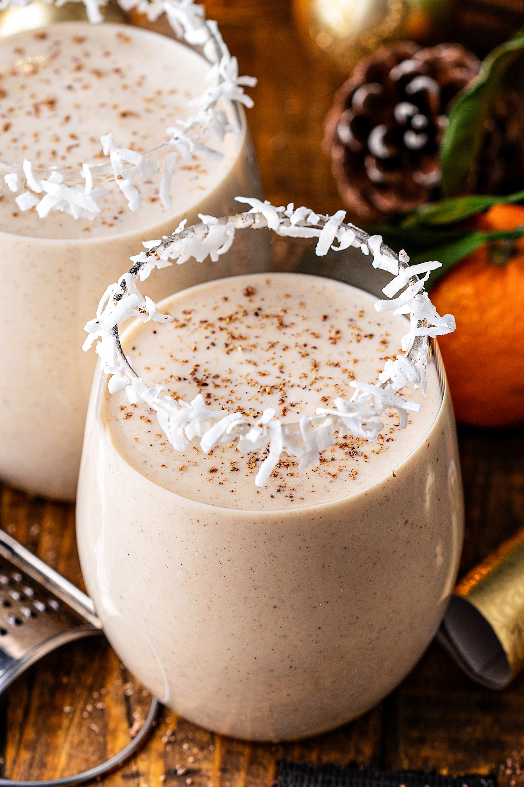

Coquito Best Drink

Have the happiest holiday ever with this top-rated coquito recipe. Whether you bottle it and give it as gifts or keep the whole batch to yourself, this boozy drink will make your season extra festive.
What Is Coquito?
Coquito is a traditional holiday drink that originated in Puerto Rico. In Spanish, coquito means "little coconut." The beverage is coconut-based and spiked with rum. Rich and creamy coquito, which is often thickened with egg yolks, is similar to eggnog. In fact, sometimes it's referred to as "Puerto Rican eggnog."
Coquito Ingredients
These are the ingredients you'll need to make a decadent batch of coquito:
- Evaporated milk:This coquito recipe starts with a can of evaporated milk.
- Eggs:Two beaten egg yolks contribute to the rich, thick, and creamy texture.
- Cream of coconut:Canned cream of coconut lends richness and gives the coquito its signature coconut flavor.
- Sweetened condensed milk:Sweetened condensed milk makes everything more delicious, including this coquito recipe!
- White rum:The best rum for coquito is white Puerto Rican rum, such as Bacardi. In a pinch, any pleasant-tasting white rum will do.
- Water: Water thins the thick and creamy mixture, making it super pourable.
- Vanilla:A teaspoon of vanilla extract takes the flavor up a notch.
- Spices: Cinnamon and cloves add warmth and coziness.
How to Make Coquito
You'll find the full, step-by-step recipe below — but here's a brief overview of what you can expect when you make this crowd-pleasing coquito:
- Cook the evaporated milk and egg yolks in a double boiler until thick.
- Transfer the mixture to a blender and blend with the remaining ingredients.
- Transfer to glass bottles and refrigerator until cold.
Ingredients
- 1 (12 fluid ounce) can evaporated milk
- 2 large egg yolks, beaten
- 1 (14 ounce) can cream of coconut
- 1 (14 ounce) can sweetened condensed milk
- ½ cup white rum
- ½ cup water
- 1 teaspoon vanilla extract
- ½ teaspoon ground cinnamon
- ¼ teaspoon ground cloves
Directions
Step 1
Gather all ingredients.
Step 2
Combine evaporated milk and egg yolks in the top of a double boiler over simmering water. Cook over the simmering water, stirring constantly, until mixture is thick enough to coat the back of a spoon, and reaches a temperature of 160 degrees F (71 degrees C).
Step 3
Transfer mixture to a blender. Add cream of coconut, sweetened condensed milk, rum, water, vanilla, cinnamon, and cloves; blend until combined, about 30 seconds.
Step 4
Pour into sterilized glass bottles and store in the refrigerator; serve cold or over ice, if desired.